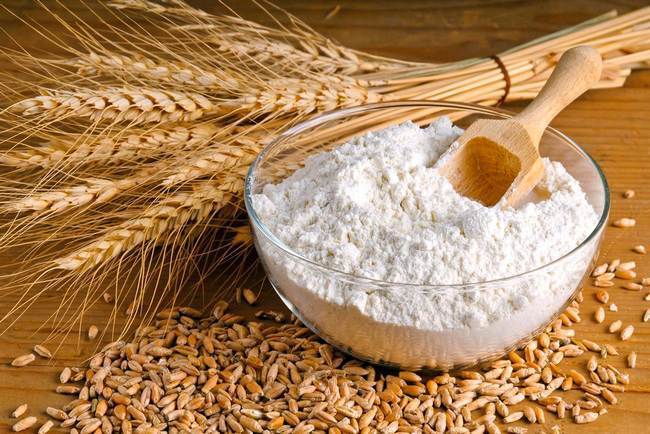

Класичний чізкейк
Інгрідієнти:
150 г песочного печенья; 75 г сливочного масла; 900 г сыра «Филадельфия»; 200 г сахарной пудры; 200 г сметаны жирностью 20%; 3 столовые ложки муки; 3 яйца; 1 яичный желток; щепотка ванилина.
Спосіб приготування:
Измельчите печенье в блендере, добавьте к нему растопленное масло и хорошо перемешайте. Ровным тонким слоем распределите смесь по дну формы диаметром 23 см и утрамбуйте. Выпекайте в разогретой до 180 °C духовке 10 минут. Затем вытащите и дайте основе остыть. Тем временем смешайте сыр и сахарную пудру. Введите сметану и муку и перемешайте ещё раз. Поочерёдно добавьте по одному яйцу, желток и ванилин, перемешивая после каждого ингредиента до однородной консистенции. Равномерно распределите начинку по основе и выпекайте 45 минут при температуре 160 °C.
Cheesecake готовий!